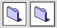

Image Wells
The image well is used to display non-text visual content, such as icons or pictures. Image wells have a two-pixel-wide rectangular frame. This control has a "recessed" appearance and a white background fill, which distinguish it from controls such as bevel buttons. Figure 2-36 shows the enabled and selected states of image wells.Figure 2-36 Image wells in enabled and selected states

Image wells can serve as drag and drop targets. You could use a set of image wells to manage thumbnail images in a clip-art catalog, for instance, or to display a set of user-selectable icons.
Image wells should not be used in place of push buttons or bevel buttons.